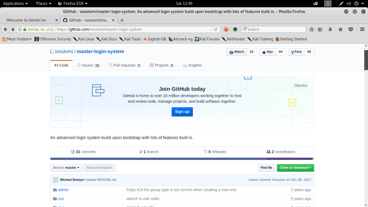
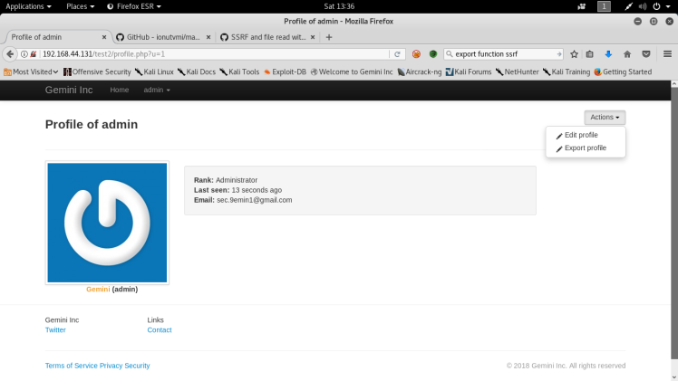
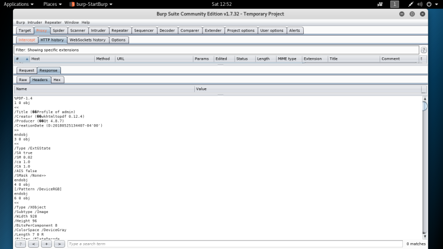
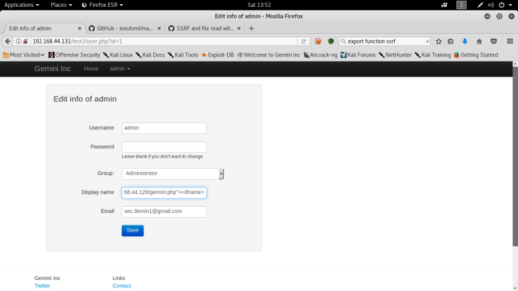
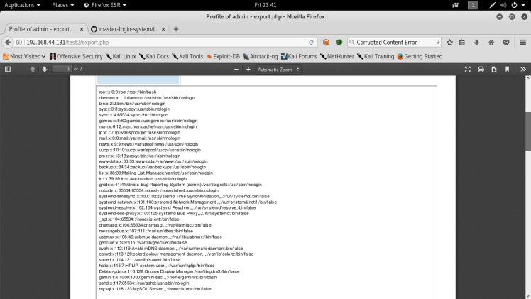
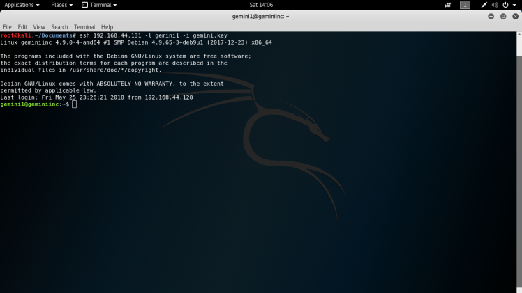
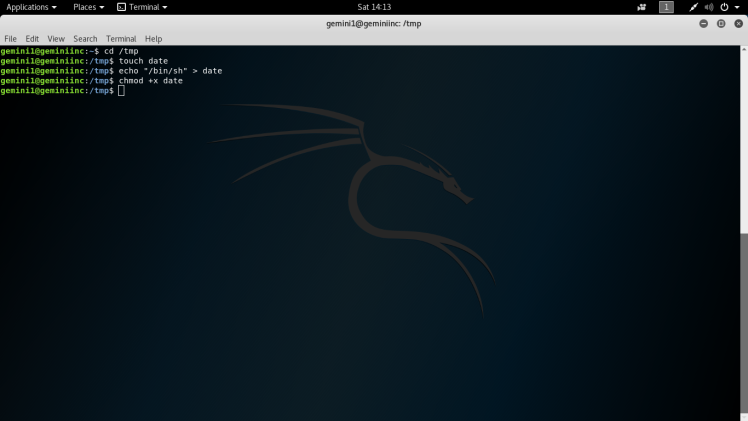

Genimi CTF WriteUp
Gemini Inc 1 is a intermediate box in my opinion due to the exploitation method being not very well documented, thus requiring a lot of enumeration online. Was a lot of fun to complete and allowed me to learn a few things along the way. Never the less let’s get into it. First step as always is a nmap scan to check for open ports :
Syntax: nmap -sV -sC 192.168.44.131

So examining the nmap scan results, you can see that there are two open ports. One being ssh and the other being http. Http usually leads to more interesting information than ssh, at least at this point in the attack, so I started there. After navigating to the server in my browser I was greeted with a directory listing of the root directory of the web server with a folder called test2 open to the public. You can see this in the nmap scan results in the previous screenshot. After accessing this folder I was greeted by a web app:

This app seems to be a variation of a open source login system from GitHub as it says on the front page of the app. Other than a login page and the homepage, there didn’t seem to be any other useful functionality on the page from a initial look around, so I decided to run a sub-directory brute force tool called gobuster.
Syntax: gobuster -w /usr/share/wordlists/dirbuster/directory-list-2.3-medium.txt -u http://192.168.44.131/test2/ -x .php

From the gobuster output, after going through a lot of the files, the only interesting page was export.php. Navigating to this page, I was greeted by a pdf viewer with the admin’s profile displayed as a pdf:

This was interesting because it gave notice to an user named admin and interesting functionality that was integrated into the web app. Seems like the script exports a html page into a pdf. Anyway after seeing this I decided I needed to get into the admin panel to further attack the application. At this point the best thing to explore would be the git hub since this was a open source app:

After searching through the files on the git hub, I finally found a default login for the admin in the install.php file. I also noticed that the export.php that had the interesting functionality wasn’t in the git hub, meaning that it was a custom script from the machine maker:

After logging into the web app, I was directed to the admin panel:

It looks identical to the page I saw when I was looking at export.php. I also saw that we had two more functions that we didn’t have before, the edit and export profile options.
This is the part that took me the longest to complete.The variation of the vulnerability that applied to this application isn’t well documented and I had to search for awhile before finding anything relating to it. But I finally found something at this site https://securityonline.info/export-injection-new-server-side-vulnerability/. Feel free to read it to get a better understanding of the vulnerability. The jest of it is that usually in export functionalities like these, there’s a custom engine that parses html elements on the page it’s supposed to convert to a pdf. Now if there’s no filtering on the html that gets thrown to the engine, an attacker can send an iframe tag with file:// and a local file name to the engine to achieve arbitrary local file exposure sent to them in the requested pdf. Here’s a diagram highlighting the attack:

After trying this attack out on the web app, it didn’t give me the expected results. I wasn’t getting the local file displayed back to me in the pdf. So my next option was to go and look for vulnerabilities in the engine itself,hopefully finding something that I could leverage to get the previously found article to function correctly, though at this point I didn’t know what the engine was. I fired up burp to see the output of the export.php file, in order to see if I could find anymore information about it:

Seems like in the response it reported back that the creator of the pdf is a engine called wkhtmltopdf v.0.12.4. After finding this, it was back to google. I couldn’t find anything about it through normal channels such as exploit.db and securityfocus.com, but the git hub for the engine had a large number of issues, and so I decided to search through them for a file read ssrf vulnerability since that relates to the previous article. As it turns out I found a hit:

From this post it looks like we can use a 302 redirect response to make the wkhtmltopdf engine to point to localhost and after that use the method discussed in the previous article to read local files. So my next step is to make a small php script and store it on my own local server:

Looking back at the admin panel after logging in it looks like I had a edit profile button and since the export function seems to only work with the admin profile and it seemed like easiest option to input the malicious iframe tag into a parameter in the profile:

So what’s happening is, that after the export function is initiated, the engine is going to parse my iframe and when it does the php script on my server is going to add a location header to the request to the engine and make the engine redirect to it’s self then allow me to read local files. I first test this out with /etc/passwd and this is was the output:

So remembering the open ssh port from earlier, I have a entry way in the box if I can find the private key of the gemini1 user from the /etc/passwd output. Usually the path for ssh creds is /home/[user]/.ssh/ id_rsa, so that’s the file I checked for first off and it fruitfully was correct:

Using this key, I had my clearance to the ssh service. I changed the permissions on the private key file and used the user gemini1 to log in.:

Now we’re in the box so after enumerating for a little, I find a suid file that looks interesting and out of place called /usr/bin/listinfo:
Syntax: find / -perm -u=s -type f 2>/dev/null

After running this binary it looks like it runs a few other binaries such as date, ifconfig and netstat:

Anytime I see this type of behavior in a suid binary, strings is the way to go to see if any of those binaries were implemented incorrectly such as not having a absolute path in the script:
Syntax: strings /usr/bin/listinfo

Date seems to be vulnerable to this from the strings output above. So the next step would be to change the Path environment variable to redirect the search for the date binary to my preferred directory. :
Syntax: export PATH=/tmp:$PATH

The navigating to /tmp, I make a file called date and echo “/bin/sh” into it and change the permissions to a executable:

Then finally I ran the suid file and was greeted with a root shell, the shell was a little funky because of the outputs in the script but it was still workable,from there I accessed the root folder and found the flag.txt: